El ¡Boom! de la música instrumental
4. LA MÚSICA INSTRUMENTAL
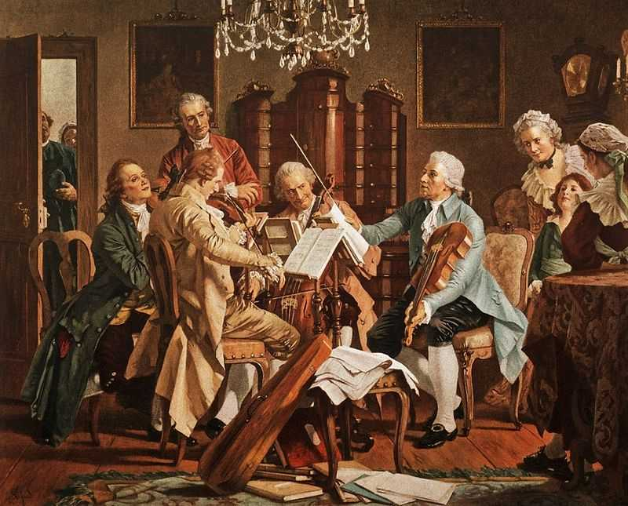
En el Barroco, la música instrumental se independiza de la vocal y aparecen las primeras formas puramente instrumentales:
- Sonata: obra en varios movimientos para pocos instrumentos. (Sonata para Violín en sol menor: El trino del diablo de Giuseppe Tartini).
- Suite: sucesión de danzas con distinto carácter. (Suite para clave en re menor. Cuarto Movimiento: Sarabanda; de Handel).
- Concierto: contraposición entre un solista y la orquesta (Las cuatro estaciones. Concierto nº4 en fa menor L'inverno I. Allegro non molto de A. Vivaldi).
4.2. La orquesta
La orquesta se organiza como grupo estable de instrumentos, dominada por las cuerdas (violines, violas, violonchelos) y complementada con viento y continuo. Como instrumentos que formaban parte de la orquesta:
Familia de cuerdas: el violín se convierte en el instrumento central del Barroco y de la orquesta. Su capacidad de expresividad, agilidad y dinámica hace que muchas obras se estructuren alrededor de él (como los conciertos de Vivaldi). Violín barocco, viola da gamba y violonchelo se integran en la orquesta como columna principal del sonido.
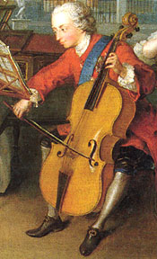 |
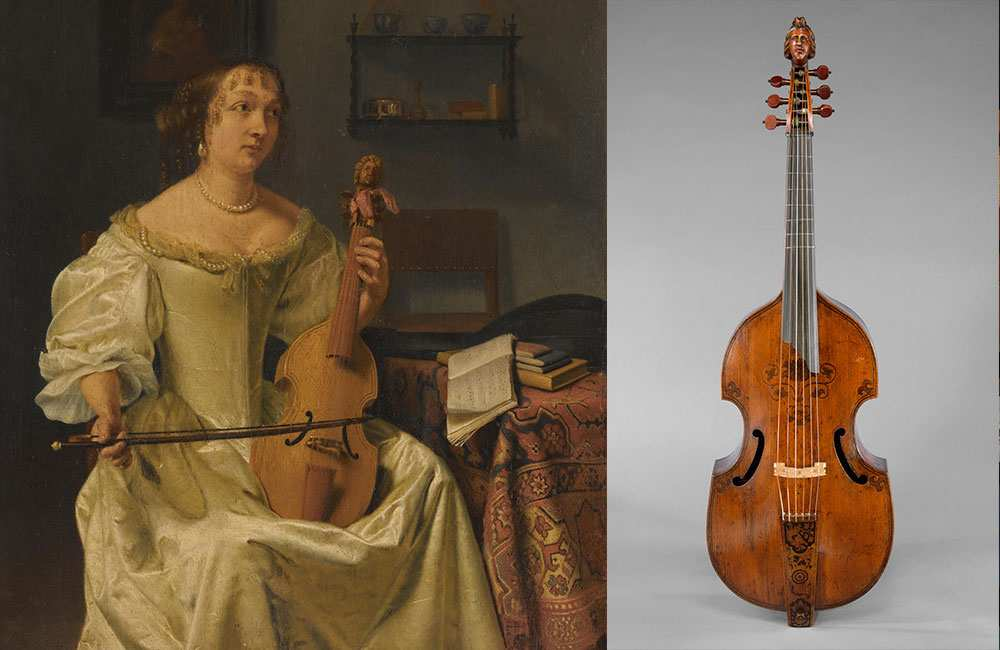 |
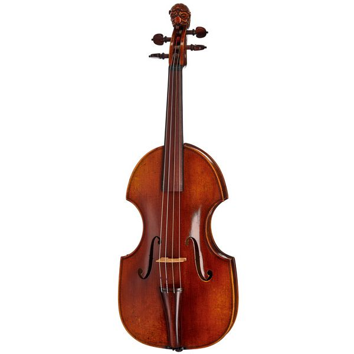 |
Cuerda percutida: clavecín (harpsichord): esencial para el bajo continuo. Produce un sonido claro y brillante, aunque no cambia de volumen al presionar teclas (como sí hace el piano). Suele estar acompañado por un violonchelo o gamba reforzando la línea grave.
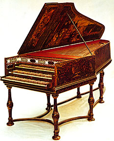
Vientos madera: flautas (traverso), oboe, fagot. Los instrumentos de viento toman protagonismo. El traverso (flauta barroca) y el oboe barroco se afianzan como instrumentos solistas en conciertos y sonatas, aportando colores más variados a la orquesta.
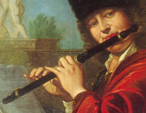 |
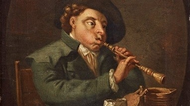 |
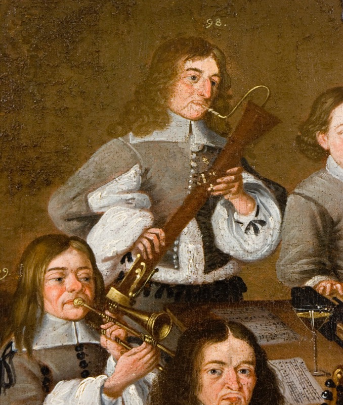 |
Metales: trompetas y trompas. Utilizados sobre todo en música ceremonial o cortesana para dar brillo y grandeza (por ejemplo, en fanfarrias o pasajes festivos).
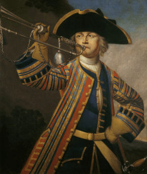 |
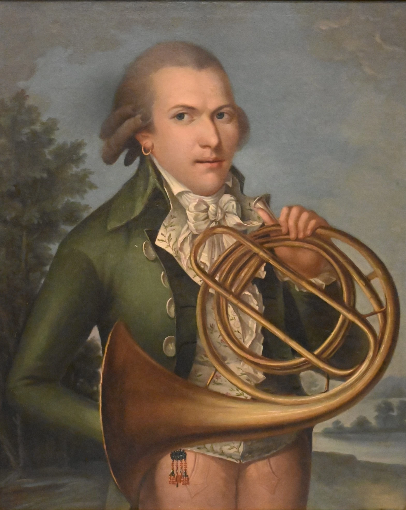 |
Percusión: destaca la aparición de los timbales.
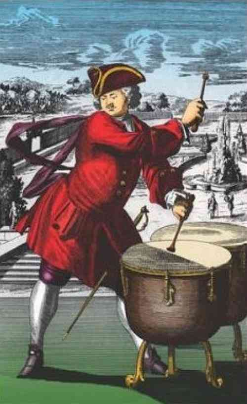
4.3. El virtuosismo como ideal artístico
Como ya hemos visto, durante el Barroco surge la figura del intérprete virtuoso, capaz de realizar pasajes técnicos brillantes y expresar contrastes dramáticos con rapidez y precisión. Los virtuosos son intérpretes capaces de:
- Tocar frases rápidas y ornamentadas,
- Dominar registros agudos y graves con eficacia,
- Improvisar variaciones sobre un bajo o tema.
El virtuosismo se celebra especialmente en el concierto:
- En el concierto solista, un instrumentista destaca frente a la orquesta, como en El Invierno de Vivaldi.
- En el concerto grosso, un pequeño grupo de solistas (concertino) dialoga con la orquesta (tutti).
Este papel del intérprete transforma la música barroca: no basta con tocar bien, hay que emocionar con precisión técnica y contraste expresivo.